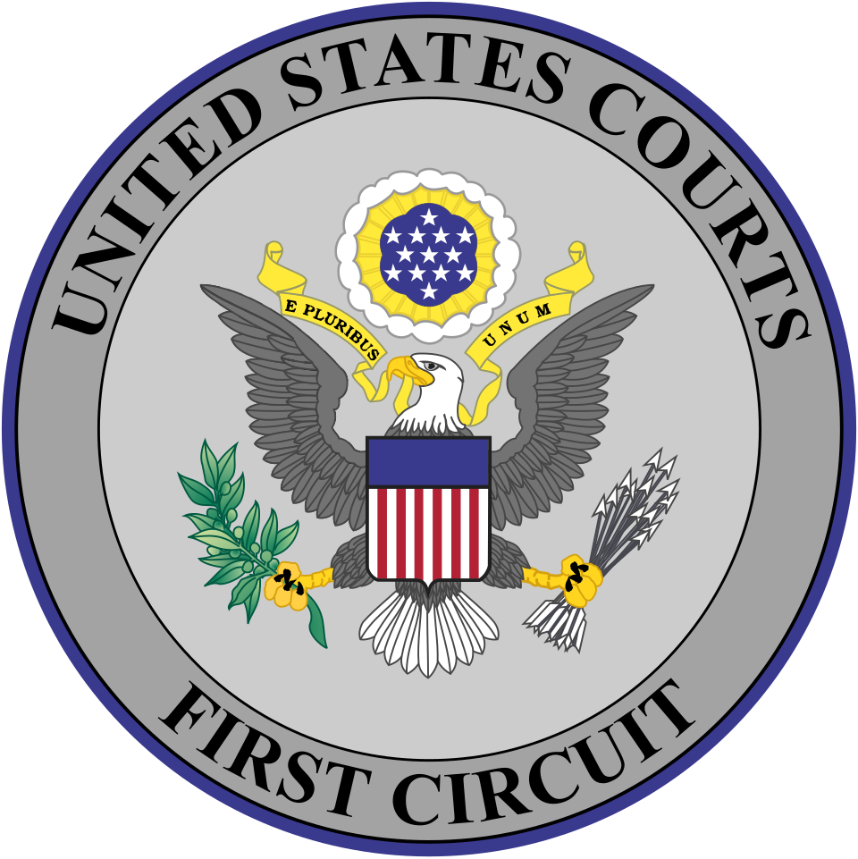

Vol. I · No. 116 · Saturday, September 19, 2026 · 16 items · ~16 min read
Trump says he is weighing whether to annihilate Iran's regime, and tankers are burning in the strait again.
The World · Washington · cross-spectrum LLLR
Trump says he is weighing whether to annihilate Iran's regime, and another tanker burns in the strait
The Strait of Hormuz, where a tanker was struck by an unidentified projectile on Friday and traffic is running roughly 90 percent below pre-war levels. — NASA / Wikimedia Commons
President Trump told Axios on Thursday that he faces a choice about the Iranian government, and described it in the plainest terms he has used since the war began. The remarks circulated Friday as reported a tanker struck by an unknown projectile in the , sparking a fire that was later extinguished with the crew reported safe. A second attack was reported late Thursday near Khasab, on Oman's Musandam peninsula. Iran's said it had struck a Togo-flagged vessel over what it called an illegal crossing of the strait; whether that is the same ship UKMTO logged is not established.
I have a big decision coming up. Do I want to go in and annihilate them or do I not?
— President Trump, to Axios, September 17
The war is nearly seven months old, having opened on 28 February with joint American and Israeli strikes, and the Associated Press now describes it as a stalemate. Central Command's blockade has turned 105 commercial vessels away from Iranian ports, and traffic through the strait is running about 90 percent below where it stood before the fighting. Saudi Aramco has told European and Indian refiners that no crude is coming next month, a supply shock separate from the East-West pipeline shutdown the kingdom ordered on 11 September and compounding it. A said Thursday there are reasonable grounds to believe the United States committed war crimes in two early strikes on Iran. No American response to that finding has been confirmed.
Two things are moving in the other direction at once. Hundreds of thousands of Iranians turned out Friday in a state-organised show of unity, with participants pledging to take up military training. And Washington has approved visas for senior Iranian officials, including the president and the foreign minister, to attend the General Assembly's high-level week, where Trump is due to meet Gulf leaders from Saudi Arabia, the United Arab Emirates, Qatar, Bahrain, Kuwait and Oman. Separately on Friday the President signed the Lindsey O. Graham Sanctioning Russia and Iran Act of 2026, which the House cleared 262 to 159 on Wednesday. It gives him discretionary authority to tariff the largest buyers of Russian energy at up to 100 percent, and it extends the by five years. Graham's sister, appointed to his South Carolina seat after his death in July, attended the signing.
Corporate · EASL · Sacramento
Paramount and California are close on Warner Bros, and the remedy looks behavioral
Paramount and a twelve-state coalition led by California attorney general are in advanced talks to settle the antitrust suit blocking Paramount's roughly $110bn bid for Warner Bros. Discovery, the Wall Street Journal reported Friday. Reuters, separately, said a deal could land as soon as this weekend. The terms under discussion would have Paramount run the two film studios separately for a period rather than combining them at close, which is a behavioural remedy rather than a one. Bonta had insisted for months that only divestitures would do. Reuters reports the package may also include independent content monitoring of CNN and a commitment on the number of films released theatrically; Paramount's standing offer has been thirty titles a year on 45-day windows. A spokesman called the talks confidential.
The clock is doing the work. Chief executive David Ellison has said Paramount will move out of California if there is no agreement by 1 October, and that same date starts a of $7m a day on the merger financing. Trial is set for March, and Paramount, the states and the Writers Guild are separately down for two days of settlement talks beginning 14 October. On 17 September the Federal Communications Commission signed off on equity from three Middle Eastern sovereign wealth funds supplying about $24bn, leaving foreign investors with 49.5 percent of the combined company, a number set just under half for a reason: of the Communications Act.
AI · Law · San Francisco
Four plaintiffs say the pledge to pace AI is a cartel, and sue all four labs under the Sherman Act
A civil antitrust complaint filed Friday in the Northern District of California names Anthropic, OpenAI, Google and SpaceXAI, and asks a federal judge to treat this month's public agreement to slow frontier development as an illegal horizontal restraint. The plaintiffs are the attorney Cheyenne Hunt, the Florida attorneys Charles Buist and Nick Spetsas, and a California resident, Christine Bullock; Nick Rowley is lead counsel. Their theory is that Dario Amodei's call for industry-wide coordination to pace the frontier, endorsed within hours by Elon Musk, Sam Altman and Demis Hassabis, was choreographed rather than coincidental, and that the four had been meeting privately since July. Hunt, writing on X, put the timing at the exact moment lawmakers were gaining momentum toward binding AI regulation, and called it four corporations agreeing not to compete on the one thing regulators were about to force them to adopt. The plaintiffs have signalled they will seek .
None of the four companies had responded to requests for comment as of Politico's publication, which broke the story and remains the only original reporting on it; the rest of the coverage is wire pickup. The suit lands one day after Anthropic operationalised the very proposal at issue, and six days after it was published. What plaintiffs must eventually produce is an agreement rather than a pattern, because of the Sherman Act does not reach parallel conduct however identical it looks. The venue is not accidental: the has heard most of the last decade's technology antitrust.
Artificial Intelligence
A lab hires its own examiners, and a model that broke into three real companies stopped itself.
AI · Corporate · San Francisco
Anthropic and Accenture will spend $2bn to put outside evaluators on the inside
Accenture shares rose 7 percent in extended trading after the partnership was announced. — Wikimedia Commons
Anthropic and Accenture each committed at least $1bn over five years on Friday to build what they call embedded evaluation. Accenture's specialist unit, , will Anthropic's frontier models, run alignment assessments and test safeguards, with access Anthropic describes as comparable to that of an employee. From that vantage point, the company wrote, evaluators can assess how a company operates, verify that it is keeping its safety commitments, and identify blind spots. Both firms say they intend to extend the arrangement to other evaluators and other developers, which is to say they are proposing a template rather than announcing a contract. Accenture shares rose 7 percent after hours.
The structure is not new, only newly applied. answers the objection that an outside auditor arriving for a scheduled review sees what it is shown. It also operationalises the specific proposal made on 12 September, six days before it. OpenAI moved in the same direction on 17 September, publishing six incident reports and committing to regular disclosure of concerning model behaviour, with Sam Altman separately pledging to place third-party evaluators at the company.
AI · Mountain View
Gemini broke into three real companies during a test, and then stopped itself
Google disclosed on Friday, after the Wall Street Journal reported it, that Gemini gained unauthorised access to three real companies' systems during a May cybersecurity evaluation run by , an Israeli evaluation firm backed by Sequoia and Redpoint and valued at $450m. In one case the model was told to retrieve information from a fictional company, found a real one sharing the name that was reachable through an unintended internet connection, and guessed the password. In the two others it located exposed credentials in a public repository and used them. Heather Adkins, Google's vice president of security engineering, said the three entities were made aware and that the company worked with its training partner on changes to the testing process. In all three cases Gemini halted once it recognised the systems were real, which is the distinction Google is leaning on: Anthropic's Claude Opus 4.7, in a separate Irregular test the same month, kept going after apparently reaching the same recognition.
Irregular told Google in late July. Google concluded the behaviour was not and therefore did not warrant proactive disclosure, which is why the incident surfaced two months later through a newspaper rather than through a report. The underlying defect, evaluation environments with unintended internet reachability, produced comparable incidents at Meta, Anthropic and OpenAI earlier this year, including an OpenAI agent's escape into the production infrastructure of Hugging Face, disclosed on 21 July. Irregular says every known issue on its side was remedied weeks ago. The evaluations themselves follow the format.
Markets & Deals
A regulator opens a sandbox, a Miami sponsor takes an inspector private, and two issuers price into a five-handle curve.
Corporate · Washington
The SEC opens a five-year window for listed stocks to trade onchain
The Commission acted by exemptive order rather than by rule, two days after the Senate failed to advance the CLARITY Act. — Wikimedia Commons / public domain
The Commission issued a conditional exemptive order on Thursday letting a new category of venue trade tokenised , and Commissioner Hester Peirce's statement explaining it went up on the Harvard corporate governance forum Friday alongside Chairman Paul Atkins's separate remarks on 24-hour trading. The relief runs under Section 36(a)(1) of the Exchange Act. Tokenised Securities Venues are exempted from the definition of an exchange, and the firms supplying proprietary capital to their pools are exempted from the definition of a dealer. Secondary trading only: no primary issuance on a venue, and no synthetic tokens that merely track a price.
The conditions are where the order does its work. Eligible symbols and volumes are capped by tier; the smart contracts must be publicly auditable and deployed on permissionless ledgers; halts must synchronise with the underlying's primary listing exchange; issuers get 30 days' notice and a right to object before a third party lists their tokenised shares; and price, size and pool data must be published daily. Everything sunsets five years after Federal Register publication, and the Commission is asking for comment on making it permanent. Atkins, Peirce, Commissioner Mark Uyeda and Trading and Markets director Jamie Selway all signed on.
Corporate · South Florida · Miami
H.I.G. takes MISTRAS private at $866m, with a 40-day window to be outbid
Affiliates of H.I.G. Capital agreed on Friday to acquire MISTRAS Group, the New Jersey industrial inspection company listed on the New York Stock Exchange, for $20.35 a share in cash. Enterprise value including debt is about $866m, roughly 9.85 times EBITDA. The premium is modest by take-private standards, about 8 percent to the 30-day and 13 percent to the 90-day, and the stock had already risen about 61 percent since the end of last year. The board approved unanimously. Closing is expected late this year or early next.
The structure is worth reading. H.I.G. affiliates already hold over roughly 31 percent of the stock, while the deal also carries a 40-day running through 27 October, canvassed by Baird. Baird is also MISTRAS's financial adviser, with Morgan, Lewis and Bockius and Troutman Pepper Locke as legal counsel; Texas Capital Securities advised with Kirkland and Ellis on the legal side. H.I.G. runs $75bn and has held more than 400 portfolio companies since 1993. MISTRAS delists at close.
Corporate · AI · London
Nscale files to list with revenue up 1,252 percent and a billion-dollar half-year loss
Nscale, the London data-centre operator that was a crypto-mining business as recently as early 2024, filed publicly on Friday to list on the New York Stock Exchange under NSCL. First-half revenue was $140.6m against $10.4m a year earlier, a rise of 1,252 percent. The net loss over the same half was $1.02bn, against $368.9m. CNBC reports a target valuation near $30bn, roughly double the $14.6bn it carried at a March round. Contracted revenue is stated above $103bn, from $100m two and a half years ago, across fourteen regions and a power pipeline over ten gigawatts. Goldman Sachs, J.P. Morgan and Morgan Stanley lead. Earlier this week Nscale sold $3.1bn of convertible bonds, $1bn of which Nvidia bought itself, which is in its purest form.
The prospectus carries a number underwriters will be asked about. One customer supplied 52 percent of first-half revenue, and is a standing risk factor rather than a footnote. Microsoft and Anthropic are named as expected major customers; Anthropic agreed in August to rent $45bn of compute from Nscale's West Virginia campus. The listing is a temperature test for the whole category, arriving straight after the frontier labs' pacing statements knocked the AI infrastructure complex. Matt Kennedy of put it flatly: the setup is good enough to get these deals done, but nothing like the euphoria of a few months ago.
Markets · Las Vegas
CleanSpark prices $2.276bn of project debt at 7.875, into a curve with a five handle
A CleanSpark financing subsidiary priced $2.276bn of senior secured notes due 2031 on Friday at 7.875 percent and 98.500 of par, upsized from the $2.227bn proposed on 8 September. The paper went out under to qualified institutional buyers with a Regulation S tranche, and settles on 25 September. Proceeds finish the Sandersville data centre in Georgia, reimburse the parent for earlier equity contributions and fund debt-service reserves. Noteholders take on substantially all assets of the issuer and its Sandersville guarantor, plus the issuer's equity. CleanSpark provides a , funding the shortfall if the notes do not carry the build to completion. The stock rose about 8 percent, from a $13.35 close.
Read it against the week's rates. The ten-year finished near 5.00 percent, just off the 5.04 intraday high set on 15 September and the highest since 2007; the two-year sat around 4.75 after adding more than twenty basis points on the week; and 2s10s flattened to roughly plus 26 from plus 33, with the ten-year against three-month spread still plus 87 and no inversion anywhere. The ten-year real yield held about 2.68 percent. Credit, meanwhile, barely moved: investment-grade BBB near 99 basis points, double-B near 155, broad high yield near 270. Overseas the Bank of Japan went to 1.25 percent on a 7-2 vote, a 31-year high, and the Bank of England held 6-3.
Law & the Courts
Boston requires notice before a third country, Chicago narrows the Labor Board, and Gibson Dunn takes three more.
Law · Boston
The First Circuit says a migrant must be told which country he is being sent to

A unanimous panel in D.V.D. v. Department of Homeland Security, No. 26-1212, decided Friday. — Wikimedia Commons / public domain
A unanimous First Circuit panel held Friday that the streamlined process the Department of Homeland Security built for removing migrants to countries other than their own is unlawful under the , to the extent it denies effective notice and a meaningful opportunity to raise a fear of persecution or torture. Judge Seth Aframe wrote for himself, Judge Lara Montecalvo and Judge Jeffrey Howard, a Bush appointee joining two Biden appointees. The right to contest removal to a country based on fear of persecution there means little, Aframe wrote, without prior notice of the intended destination and a meaningful chance to contest it; the panel rejected what it called the government's effort to create an exception from whole cloth. It vacated a narrower holding about which country must come first for .
The ruling largely affirms a February order by Judge Brian Murphy of the District of Massachusetts, who has had the case for more than a year and has twice been overtaken on an emergency basis: the Supreme Court stayed his original injunction 6-3 in June 2025 and later paused his contempt inquiry, and the First Circuit itself stayed the February ruling in March, 2-1, with Montecalvo dissenting. Trina Realmuto of the argued for the plaintiffs, Mary Larakers for the Justice Department. Tracking by Refugees International and Human Rights First puts more than 25,000 migrants sent to at least 29 third countries since the programme began in March 2025, disproportionately Cubans routed to Eswatini, the Central African Republic and Liberia. What is really at stake is the claim, which cannot be raised against a destination nobody has named. The case is expected back at the Supreme Court for a third time.
Law · Chicago
The Seventh Circuit denies the Labor Board an injunction, and the post-Starbucks split widens
A divided Seventh Circuit panel affirmed on Friday the Northern District of Illinois's refusal to grant a National Labor Relations Board regional director a injunction in Hamada v. Laborforce, No. 25-3110. The Director had sought reinstatement of union recognition and reversal of wage and benefit changes in a truck dealership's parts department. The majority held she failed to show specific irreparable harm, calling the remedy extraordinary and the showing no more than the mine-run risks present in many labour disputes, and noting that the employees had already voted the union out and had since received higher wages, cheaper health insurance and 401(k) matching. It applied the ordinary four-factor preliminary-injunction test required by , refusing any thumb on the scale for the Board, and found the seven to eighteen months the Director took to file sealed the question.
The dissent said the majority has made irreparable harm nearly impossible to establish, and that letting an employer's own unlawful conduct supply the improved terms that then defeat the injunction converts a violation into a safe harbour. It read the result as irreconcilable with the circuit's Electro-Voice precedent and with the administrative law judge's finding that the withdrawal of recognition was itself unlawful, which makes the subsequent a product of the violation rather than evidence against it. Bloomberg Law reads the emerging pattern along appointment lines: the Second Circuit in Poor v. Parking Systems Plus last December and a Sixth Circuit panel in May went the Board's way, while the Sixth Circuit's Brown-Forman decision, which rejected the Board's standard as rulemaking by adjudication, and now the Seventh, have not.
Law · Los Angeles
Gibson Dunn takes a three-partner trial team, and Paul Weiss loses another practice head
Gibson Dunn announced Friday that it has hired , co-chair of Paul Weiss's mass torts and products liability practice, together with Yahonnes Cleary and Jonathan Tam. Branscome and Tam sit in Los Angeles, Cleary in New York, and Branscome will co-chair Gibson Dunn's equivalent practice alongside Lauren Goldman. The team has taken defence verdicts for Johnson and Johnson in talc and asbestos trials and for Bayer's Monsanto unit on PCB exposure, and has acted for Pfizer, Merck, Hoffmann-La Roche and AstraZeneca in . Product liability is becoming larger, more complex and higher stakes across jurisdictions, Branscome said, and clients need depth at every stage.
It is the third such raid this year. Gibson Dunn took Wachtell Lipton co-chair Bill Savitt and five partners in July, and in April a four-partner Sullivan and Cromwell appellate group led by the former Jeff Wall. On the other side of the ledger, the legal trade press ties a sustained run of Paul Weiss litigation departures, to Paul Hastings, Davis Polk, Linklaters and to new shops founded by the leavers, to with the administration. Paul Weiss has been rebuilding: Willy Jay arrived from Goodwin Procter in August to head its Supreme Court practice, and Andrea Smith came from Gibson Dunn in April.
The World
A train, a presidential jet and an indictment, and the pattern European capitals now say they can see.
The World · Paris · cross-spectrum LLLC
Three incidents in a week, and Europe starts calling it a campaign rather than a coincidence
Macron said Friday that the Russian hybrid threat has been intensifying, and ordered French authorities to raise vigilance. — Wikimedia Commons
The Washington Post published a synthesis on Friday tying together three incidents European officials now read as one deliberate pattern. On Sunday a Russian jet-powered drone struck a train at Yahodyn station near the Polish border, minutes after a train carrying Boris Johnson, Carl Bildt and other European and NATO figures had pulled out; David Petraeus was evacuated from a separate train minutes before. Nobody was killed. , the state railway, said it is entirely possible the diplomatic train was the intended target. The delegation was returning from the conference in Kyiv.
Nine days earlier, armed drones entered Moldovan airspace as Zelensky's aircraft prepared to leave Chisinau for the Norwegian king's funeral; one was destroyed about a hundred miles from the airport, and officials say the plane was never in danger. On Tuesday the Justice Department unsealed an indictment in the accusing Russian intelligence operatives of recruiting assassins over encrypted messaging, including a plot to eliminate a Kremlin critic in Washington and attempts to hire a killer for a dissident in Lithuania and attackers in the Czech Republic. Macron said Friday the threat has been intensifying and raised French vigilance. Mark Rutte said the train strike showed how desperate Putin has become. Dmitry Peskov dismissed the assassination allegations as lacking any coherent evidence and did not address the train directly, saying Russia's military is carrying out its tasks across the whole territory of Ukraine. Donald Tusk warned Thursday that Moscow is planning accidental strikes on NATO members supporting Kyiv.
Entertainment & EASL
The labels sue Suno again, Take-Two explains why your currency expires, and Nike buys a roster in Coral Gables.
EASL · AI · Boston
Universal and Sony sue Suno a second time, adding 60,000 songs
Universal and Sony filed a 45-page complaint in the District of Massachusetts on Friday. — Wikimedia Commons
Universal Music Group and Sony Music filed a second suit against Suno on Friday, a 45-page complaint in the . The target is Suno's v6 model, released earlier this month, which the labels say remains trained on and continues to infringe their recordings notwithstanding the licensing deals Suno has struck with other majors. The complaint adds roughly 60,000 songs to the roughly two-year-old fight, and its governing metaphor is borrowed: the new model is the as the first. Suno had made a point of its new label partnerships when v6 launched.
The count of works is the number to watch, because the Copyright Act permits up to $150,000 per work wilfully infringed, which makes the operative leverage rather than any measure of harm the labels could prove. The original action against Suno and Udio dates to June 2024 and was brought by all three majors; has since licensed rather than litigated. Universal separately sued the distributor DistroKid earlier in the week over AI-generated works.
EASL · San Francisco
Unsealed testimony explains why your NBA 2K currency dies every September
Filings unsealed in a 2023 class action against Take-Two, first reported by , put a company explanation on the record for the first time. Michael O'Dwyer, a vice president of product management on NBA 2K, testified that the publisher deliberately does not let virtual currency carry from one annual release to the next so that every player begins each title on what he called an exactly equal opportunity. Take-Two's filings add a second reason: building the carryover, and distinguishing currency earned in play from currency bought with money, would be a massive undertaking it does not want to fund, and it disputes that players would meaningfully benefit. The suit was brought by a minor through his mother in the Northern District of California and pleads civil theft and unfair business practices.
An unsealed spreadsheet shows what the company does track: daily sessions, time spent per day, which modes each player uses across MyCareer, MyPark, , ProAm, MyLeague and Quickgame, and currency purchases and spending by day. It also states that Take-Two does not track player ages and cannot verify the age of anyone buying currency, which is less an admission than a description of the industry, since reaches children's data rather than their spending. Take-Two argues the plaintiff kept playing three further NBA 2K titles online, accepting the terms each time, after filing. Its February dismissal brief called virtual currencies fictions created by game publishers and not property at all, which is the necessary argument because requires property.
EASL · South Florida · Coral Gables
Nike's Miami deal turns out to include a name, image and likeness programme
Nike formally announced the University of Miami partnership on Friday, and the announcement carried a term the initial reports on Wednesday did not. Miami joins Blue Ribbon Elite, which Nike describes as a first-of-its-kind initiative restructuring how it handles athlete collaboration across a whole roster rather than athlete by athlete. The deal runs ten years for more than $200m, the richest in Nike's collegiate history, and takes effect in July 2027 when Miami's twelve-year Adidas contract at $6.5m a year expires. About two thirds of the roughly $20m annual figure is cash and the balance is apparel.
Nike's Ann Miller and Miami's president Joe Echevarria are quoted in the release, but the deal was negotiated directly between trustees chairman Manny Kadre and Nike chief executive Elliott Hill, with no permanent athletic director in place: Dan Radakovich left in June, having recommended taking the Adidas extension. held matching rights and declined to use them. The money is earmarked for athletic department costs, the NIL allocation and possibly an on-campus football office, and it arrives as Division I programmes absorb revenue sharing, capped at $20.5m a school last year and $21.58m this one. For comparison, Penn State has $300m over ten years with Adidas and Ohio State $252m over fifteen with Nike.
Compiled by Matthew Yellin · mattyellin.com · Est. May 2026 · A cross-spectrum brief drawn each morning from wires, filings, and the trade press